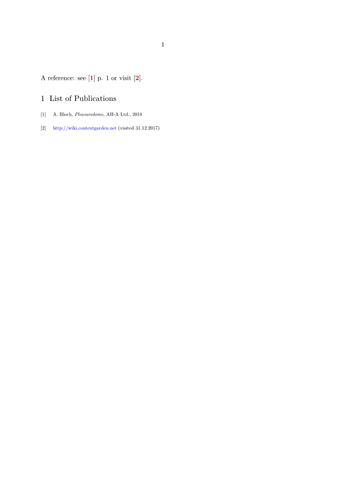

Short approach
Here is manual approach for simple bibliographies.
\definereferenceformat[cite][left={[},right={]}] \defineitemgroup [bibliography] \setupitemgroup [bibliography][each] [symbol=n, left={[}, right={]}, width=1.5em, stopper=, itemalign=flushright, inbetween={\blank[4pt]}] \appendtoks \let\bibitem \itemgroupitem \let\startbibitem \startitemgroupitem \let\stopbibitem \stopitemgroupitem \to \itemgroupcommands
Now you can use
\section{References} \startbibliography \bibitem[ref1] This is my first reference \bibitem[ref2] This is the second reference \stopbibliography
and use [[Command/cite[ref1]|\cite[ref1]]] etc to refer to bibliography items.
Here’s a similar approach using \definedescription.
Easy approach
If you need a list of publications really quickly, simply use:
-
\define[1]\Lnk {\[\in[#1]\]} \setupinteraction[state=start] \starttext %\startbodymatter A reference: see \Lnk{libA} p. 1 or visit \Lnk{libB}. %\stopbodymatter %\startappendices \startsection[title={List of Publications}] % in appendices use chapter instead of section! {\tfx \startitemize[n][stopper={},left={\[},right={\]},distance=1em] \startitem[libA] A. Bloch, {\it Pleasuredome}, AH-A Ltd., 2018 \stopitem \startitem[libB] {\blue http://wiki.contextgarden.net} (visited 31.12.2017) \stopitem \stopitemize } \stopsection %\stopappendices \stoptext
- 